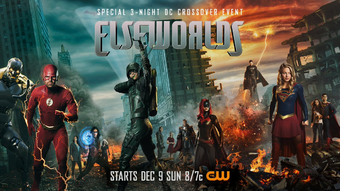
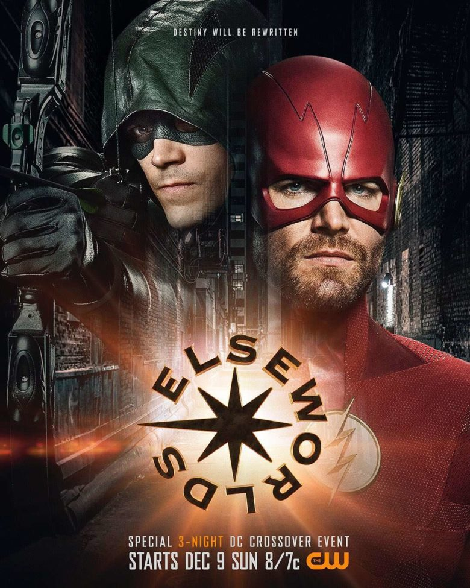
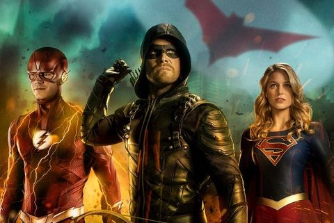
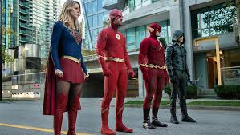
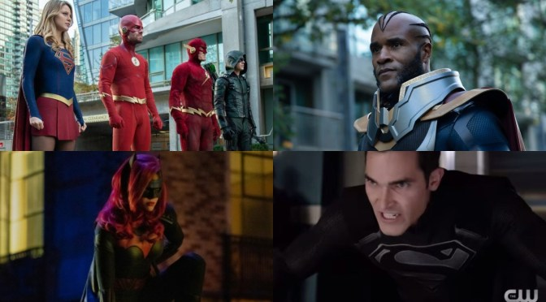
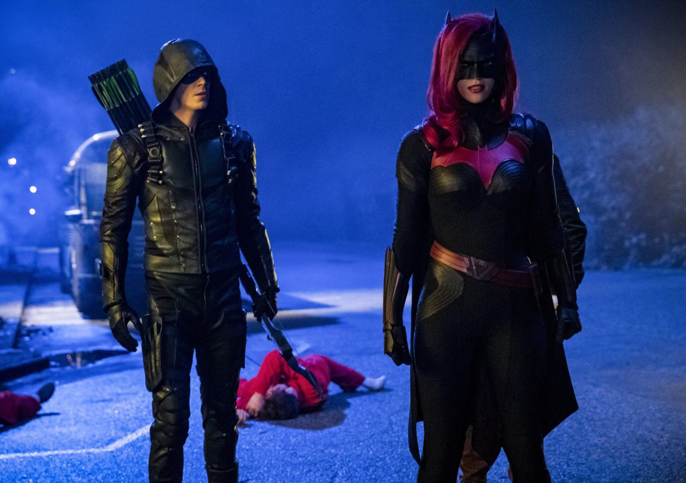

Elseworlds is the name of the fifth annual Arrowverse crossover event between The Flash, Arrow, and Supergirl. The crossover aired over three nights began on December 9, 2018, with The Flash, continued on Arrow on December 10, and concluded on Supergirl on December 11. "Elseworlds” It served as a set-up for the television series Batwoman and revealed that CBS' The Flash was canon in the Arrowverse.
| Serie | Episode No. | Episode Title | Original Air Date | |
|---|---|---|---|---|
| Part 1 | The Flash | Season 5Epsiode 9 | "Elseworlds, Part 1" | December 9, 2018 |
| Part 2 | Arrow | Season 7Epsiode 9 | "Elseworlds, Part 2" | December 10, 2018 |
| Part 3 | Supergirl | Season 4Epsiode 9 | "Elseworlds, Part 3" | December 11, 2018 |
 
The three-night event begins with Arkham Asylum doctor John Deegan rewriting reality, which results in Oliver and Barry swapping lives. In this new reality, the two heroes are the only ones that know that they are in the wrong lives and have each other's powers.
 
On Earth-90, the Flash escaped as a mysterious figure used a powerful book to destroy that Earth. On Earth-1, the same figure gave the book to Arkham Asylum psychiatrist John Deegan, who used it to rewrite reality according to his will. The following day, Oliver Queen and Barry Allen woke up in each other's lives; Oliver is the Flash and Barry is the Green Arrow. At S.T.A.R. Labs, Team Flash did not believe them and locked them up in "The Pipeline". Oliver and Barry used each other's abilities to escape and travel to Earth-38 to get help from Kara Danvers and acquainted themselves with her cousin Clark Kent and his girlfriend Lois Lane. Meanwhile, an android called A.M.A.Z.O. awoke and threated Central City. Cisco Ramon retrieved Oliver and Barry from Earth-38, with Kara and Clark tagging along. After defeating A.M.A.Z.O., Cisco vibed the mysterious figure and Deegan. The figure tells the group that something is coming and they will not be able to stop it. While Clark returned to protect Earth-38, Oliver realized that the figure and Deegan were located in Gotham City. In Gotham, Barry, Oliver, and Kara were arrested by the GCPD after getting into a fight. They were bailed out by Wayne Enterprises' CEO Kate Kane, who told them Deegan is at Arkham Asylum. The trio, with the assistance of Caitlin and Diggle, broke into Arkham to confront Deegan. They retrieved the "Book of Destiny" but Deegan escaped and caused a mass breakout. During a confrontation with inmate Nora Fries, Barry and Oliver were exposed to fear gas and believed each other to be Eobard Thawne and Malcolm Merlyn, respectively. After stopping the breakout, Kate, as the vigilante Batwoman, roused them from their hallucinatory state and told them to leave Gotham. They headed to A.R.G.U.S. to restore reality, where Earth-90's Flash warned them about the Monitor. Barry, Oliver, Kara, and Earth-90's Flash confront the Monitor, who said he is rewriting reality to test out worlds to stop an upcoming crisis. Monitor stole the book, escaped, and returned it to Deegan. He wrote a new reality in which Barry and Oliver were criminals known as the Trigger Twins, who have no powers. They are confronted by a black-suited Superman. Oliver realized the Superman impostor is actually Deegan and they forced him to save innocents while they escaped in order to find Cisco. Deegan and his forces, including Killer Frost and the Earth-1 doppelgänger of Kara's adoptive sister Alex Danvers, were holding Kara at S.T.A.R. Labs. Oliver and Barry located Cisco and persuaded him to take them to Earth-38. They found Clark, who agreed to return with them to Earth-1 while Kara persuaded Alex to release her. Arriving on Earth-1, Clark and Oliver fought Deegan and his forces so Alex, Barry, and Kara could find the Book of Destiny. They located it in the Time Vault and took it to Clark, who restored Barry, Oliver, and Kara to their real selves. Deegan retrieved the book and attempted to rewrite reality again. To impede his progress, Barry and Kara slowed time down by speeding around the Earth in opposite directions. Oliver confronted the Monitor, asking him to spare Barry and Kara, but the Monitor demanded something from Oliver in exchange. Clark, joined by Lois, Brainiac 5, and J'onn J'onzz, fought Deegan and a revived A.M.A.Z.O. Barry and Kara were nearly torn apart by their speed but Oliver shot the Book of Destiny with an arrow enhanced by the Monitor. Deegan reverted to himself, though heavily disfigured, and reality was restored. After returning to Earth-38, Clark and Lois told Kara they are expecting a child and would return to Argo City, leaving Earth's protection to her. On Earth-1, Oliver was contacted by Kate, who said Deegan, now incarcerated at Arkham, has made a new friend; who told Deegan that "Worlds will live, worlds will die, and the universe will never be the same".
 